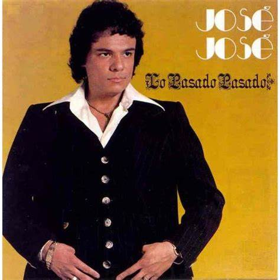
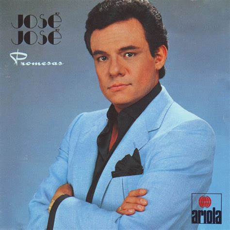
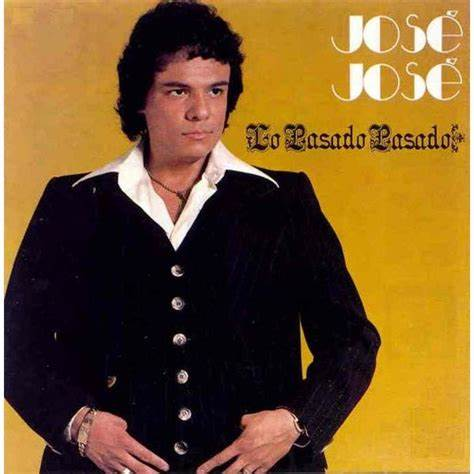
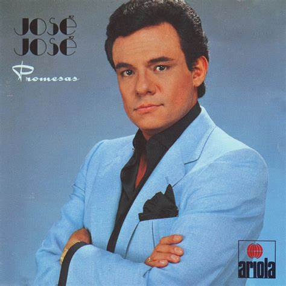

José Rómulo Sosa Ortiz, conocido artísticamente como José José, fue un cantante, actor y productor musical mexicano
nacido el 17 de febrero de 1948 en la Ciudad de México. Es considerado una de las voces más importantes de la música
romántica en español y fue apodado “El Príncipe de la Canción”.
Desde joven mostró talento musical, influenciado por su padre (tenor de ópera) y su madre (pianista). Inició su carrera
tocando la guitarra y cantando en tríos, pero alcanzó la fama en 1970 con su interpretación de “El Triste” en el
Festival OTI, canción que lo catapultó al estrellato internacional.
Durante las décadas de los 70 y 80, lanzó múltiples éxitos como “La nave del olvido”, “Gavilán o paloma”, “Almohada”,
“Lo pasado, pasado” y “El amor acaba”, consolidándose como ídolo en América Latina y Estados Unidos.
A lo largo de su vida vendió más de 120 millones de discos, convirtiéndose en uno de los artistas latinos más exitosos
de todos los tiempos. También actuó en varias películas y su vida fue llevada a la pantalla en series biográficas.
José José enfrentó problemas de salud, alcoholismo y dificultades familiares, pero su legado artístico permanece
intacto. Falleció el 28 de septiembre de 2019 en Miami, Florida, dejando una huella imborrable en la música en español.
1. Por sus más de 30 producciones discográficas, fue merecedor de más de 200 discos de oro y platino gracias a sus exitosas ventas.
2. José José vendió más de 250 millones de discos, con lo que se convirtió en uno de los latinoamericanos más exitosos de la historia. Su música llegó a países no hispanos como Arabia Saudita, Japón, Israel, Egipto y Rusia.
3. Posee el 2DO disco más vendido en la historia de México, Secretos, con más de 7.5 millones de copias..
4. Grabó más de 50 duetos con artistas como Marco Antonio Muñiz, Angélica María, Armando Manzanero, César Costa, Enrique Guzmán, José Feliciano, Roberto Carlos, Vicente Fernández, Pimpinela y Juan Gabriel.
5. De 1968 a 2010 participó en 13 películas, incluida la autobiografía Gavilán o paloma, de 1985.
6. De 1971 a 2018 apareció en 15 producciones televisivas, la mayoría, para Televisa, como El mundo joven joven de José José, Los reyes de la canción, Cantando por un sueño y La fea más bella. La última producción en la que participó fue su autobiografía José José, el príncipe de la canción, para Telemundo en 2018.
7. En Spotify cuenta con 3,7 millones de oyentes mensuales y 1,9 millones de seguidores. En la plataforma hay más de 50 producciones del Príncipe de la canción.
8. Su canal oficial de YouTube tiene 1,13 millones de suscriptores y más de 1.000 millones de reproducciones de sus videos.


 


